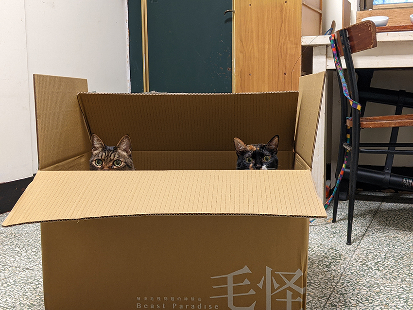
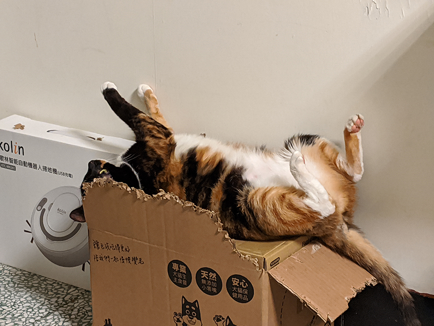
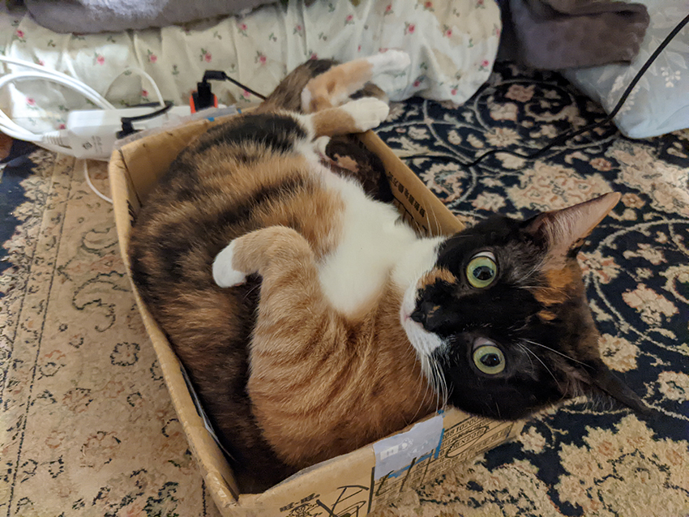

有關紙箱的那些事
張雅婷│先進研究處 \ 市場與消費者研究部
養貓的人多少都聽說過，甚至見證一個都市傳說：不論是哪家電商、什麼平台，送來多貴、多精緻、多高級的寵物用品，家裡孩子最愛的，永遠是外面用來包裝用的紙箱。紙箱無論尺寸大小、長方寬扁，當拆開包裝、取出內容物後，孩子們的第一個動作就是跳進去～，感受紙箱帶給他們的神秘力量。
|  |
| 毛怪們。 |
一旦紙箱易主交給他們之後，不論打算拿紙箱用來躲貓貓，或是躲藏耍廢睡覺，孩子們都會化身為具「有獨特美感的設計師」，接著就會按照他們自己的想法，將紙箱「變」（ㄧㄠˇ）成舒適又符合貓體工學的樣子。
|  |
| 自己設計的床最好睡。 |
尤其當寒流來襲，在紙箱小窩裡塞進幾條棉被或毛巾，立馬變成孩子們專屬的避冬小屋，配合電暖器開啟，就準備整天都找不到人了。
每當看見他們在自製化紙箱裡翻滾耍萌，不禁又讓人無意識地滑開手機，點進各大購物網站，開始想著再買點什麼，好幫他們的紙箱替換更新一番呢～。
|  |
| 好紙箱，不睡嗎？ |